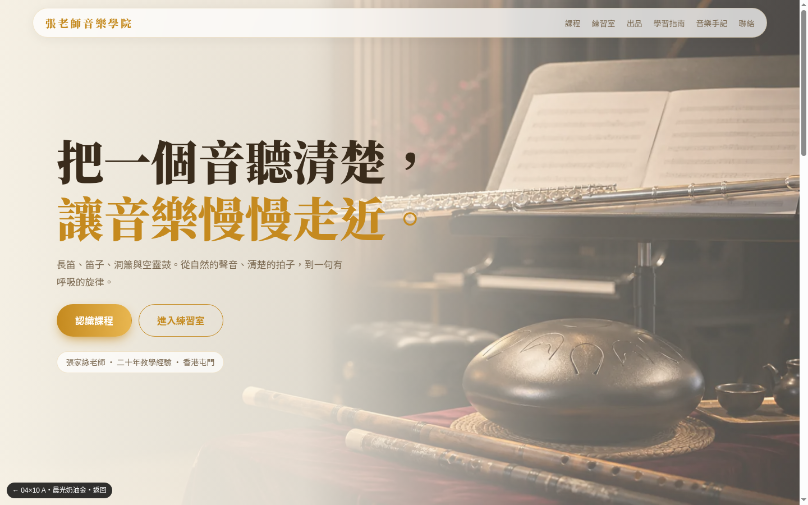
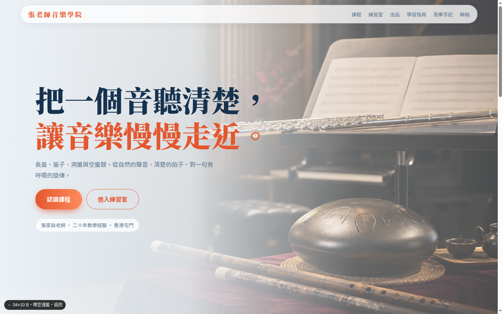
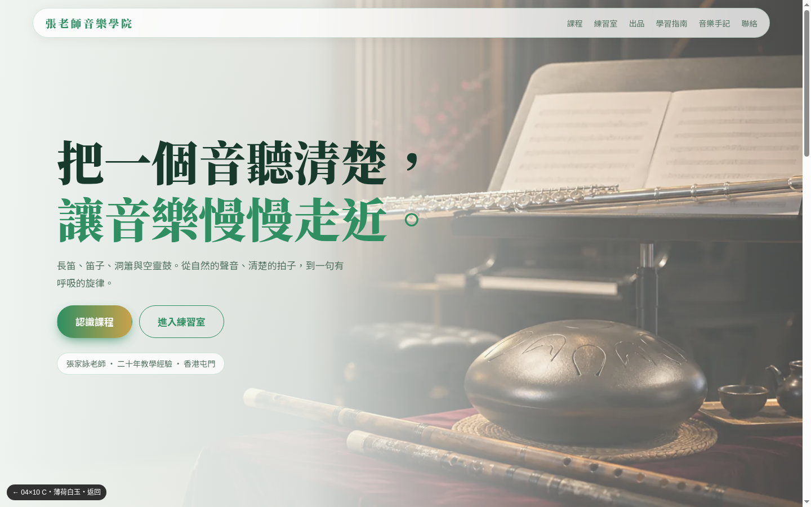
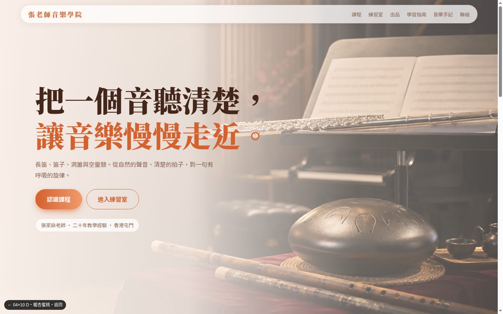

04 × 10 明亮版｜4 個配色
版面同一套（04 的電影首屏＋10 的玻璃格子），只換配色。點入看完整首頁。

A 晨光奶油金
奶油白底、蜂蜜金點綴、深咖啡字，04 的電影首屏配 10 的玻璃格，明亮暖和

B 晴空淺藍
淡天藍白底、深墨藍字、珊瑚橙點綴，清爽通透，最不累眼

C 薄荷白玉
薄荷白底、玉綠主色、香檳金輔助，像茶席與竹，柔和自然

D 暖杏蜜桃
杏色蜜桃底、陶土橙點綴，04 的暖調提亮，溫暖親切